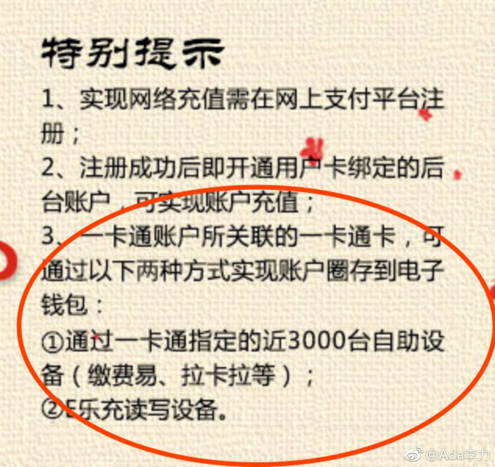

@Ada李力:
有时候搞不懂北京市政交通一卡通是在倒退还是进步。
倒退是指之前还支持NFC手机直接给卡片充值。现在要给卡片充值必须要个外设，例如那个叫e乐的东东，商城售价99元。
进步是指终于推出苹果的手机一卡通了，绑定Apple Pay充值后还送十元钱。咱什么时候撸过这种公司的羊毛？
倒退是指之前还支持NFC手机直接给卡片充值。现在要给卡片充值必须要个外设，例如那个叫e乐的东东，商城售价99元。
进步是指终于推出苹果的手机一卡通了，绑定Apple Pay充值后还送十元钱。咱什么时候撸过这种公司的羊毛？
- 